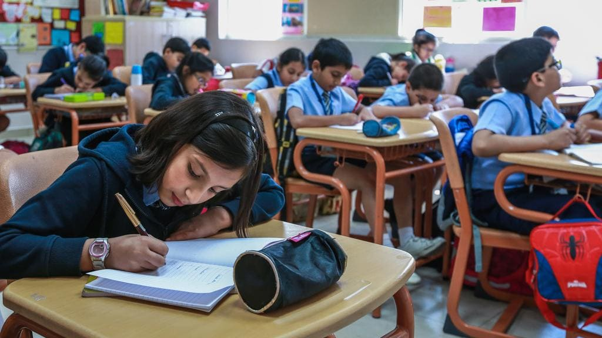
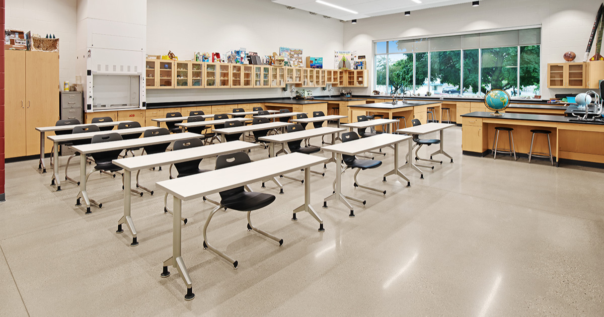
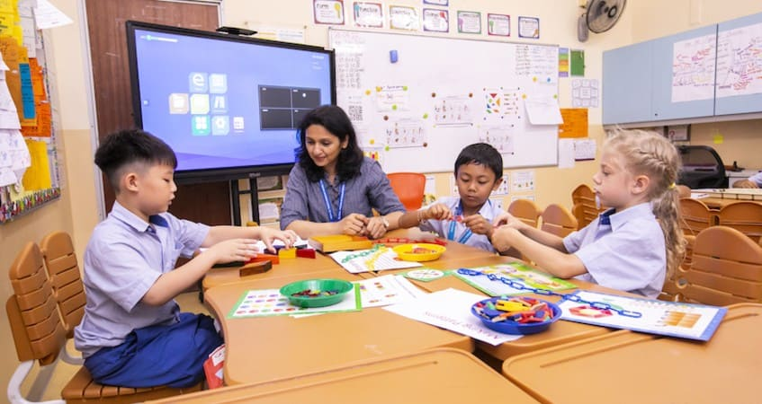

Understanding the different educational curricula available in UAE schools

The British curriculum follows the National Curriculum of England, leading to IGCSE and A-Level qualifications.

Based on US educational standards, leading to an American High School Diploma with optional Advanced Placement (AP) courses.

A globally recognized program emphasizing international mindedness and critical thinking.
| Feature | British | American | IB |
|---|---|---|---|
| Assessment Style | External Exams (GCSE/A-Levels) | Continuous + SAT/AP | Internal + External Assessment |
| Subject Choice | Specialized from Year 10 | Flexible throughout | Balanced across disciplines |
| University Recognition | Global, strong in UK | Global, strong in US | Strong Global Recognition |
| Teaching Approach | Subject-focused | Holistic Development | Inquiry-based Learning |